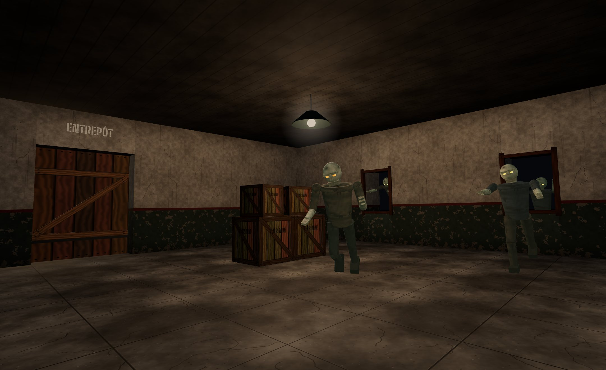

Bunker 7 · Accueil
--:--Bruxelles

Rapport d’incident · Bunker 7 · nuit du 14 décembre
ZombieSurvival
Jeu —
Ouverture du bunker…
Transmissions Actualités
Aucun communiqué pour l’instant : ils arrivent avec les versions publiées.
Théâtres Cartes
II · Transmissions
Actualités
Communiqués publiés avec les mises à jourAucun communiqué pour l’instant : ils arrivent avec les versions publiées.
III · Rapports
Mises à jour
Notes de version et historique de toutes les versions publiéesIV · Intendance
Installation
Le jeu installé sur ce PCEmplacement
Le dossier de la version installée, et le journal du launcher.
Intégrité et signature
Chaque version est signée par l’auteur ; le launcher refuse tout fichier dont la signature ne correspond pas.
Versions
V · Atelier du génie
Mod Tools
L’éditeur de cartes de Zombie Survival : plan et vue 3D, étages, bibliothèques de textures et de modèles, partie de test.
- Accès
- réservé à l’auteur · clé présente sur ce PC
- Moteur
- celui du jeu installé
- Fenêtre
- la sienne, agrandie
Cartes intégrées
Bunker 7 · Khamsin · Ombre éternelle, et les cartes faites à partir d’elles.
Bibliothèques
Textures gx_ et modèles gm_ ; une carte qui les utilise demande le jeu 2.0.4 ou plus récent.
Partie de test
Le bouton Test lance la carte dans le moteur du jeu installé.
VI · Réglages
Paramètres
Enregistrés sur ce PCPartie
Mises à jour
Accueil
Source des mises à jour
Clé de confiance — · chaque version est signée par l’auteur ; un fichier dont la signature ne correspond pas est refusé.
Source de test active : ce launcher lit une adresse personnalisée.
Adresse provisoire : les mises à jour seront actives dès que l’auteur aura publié la première version.